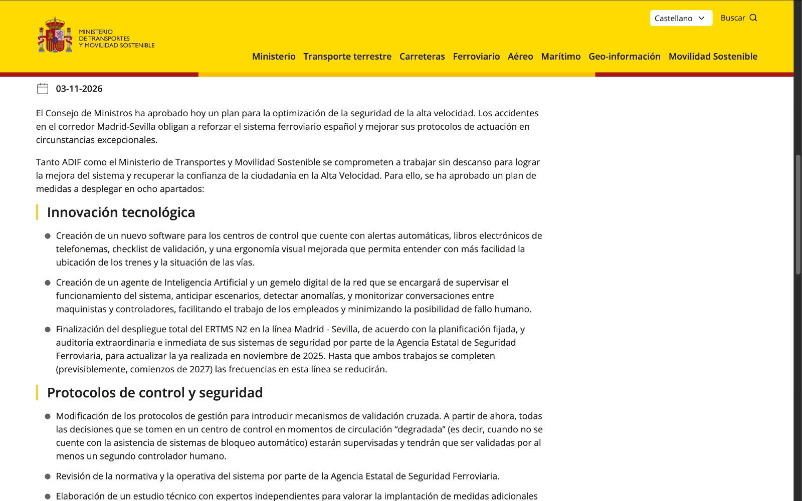
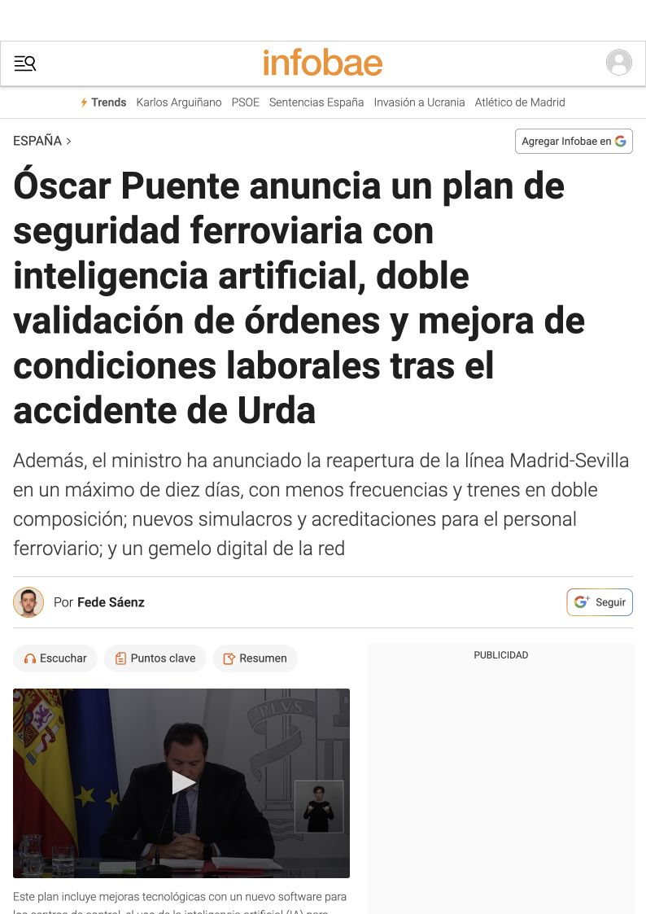
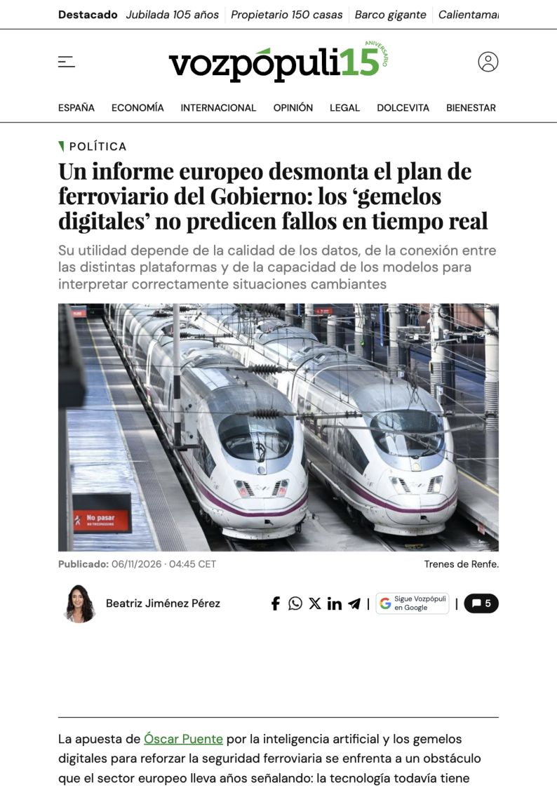

Que se quede en 115«Es un amasijo de hierros. Es como si hubieran puesto una bomba»Sebastián Herrero · pasajero del Iryo
«Es un amasijo de hierros. Es como si hubieran puesto una bomba»
Sebastián Herrero · pasajero del Iryo


